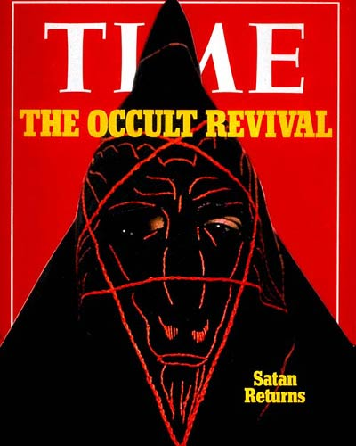

News Portrayal
News outlets, in the opinion of some, skew most facts and exaggerate the truth about many situations. Though the basic, boiled down facts tend to be generally true, all news outlets depict different cases differently, especially in terms of television and print. It is one thing to Google something, and find countless online sites regarding the subject matter. But print and television outlets are almost unavoidable sometimes, depending on what medium you prefer to use. Cults, in this instance, are labeled as taboo to the common popultation. They are depicted usually through the disturbing, stand-out cases such as Jonestown and the Manson Family. However it is rare that you will see a news piece about a non-violent, helpful cult or group that is doing good for themselves and society. People in America love controversy. They love drama and setting themselves aside from the disturbing things that they see. News outlets give people what they want; stories about people and things that seem farfetched to them. The following photo is a cover from Time Magazine regarding the Occult. Notice how eye-catching it is; notice the word choice and how Time depicts the story witht he blood-red cover so people will pick it up. This is just one of thousands of examples where news outlets almost want to scare their readers or viewers just to ensure their target population is reached.
